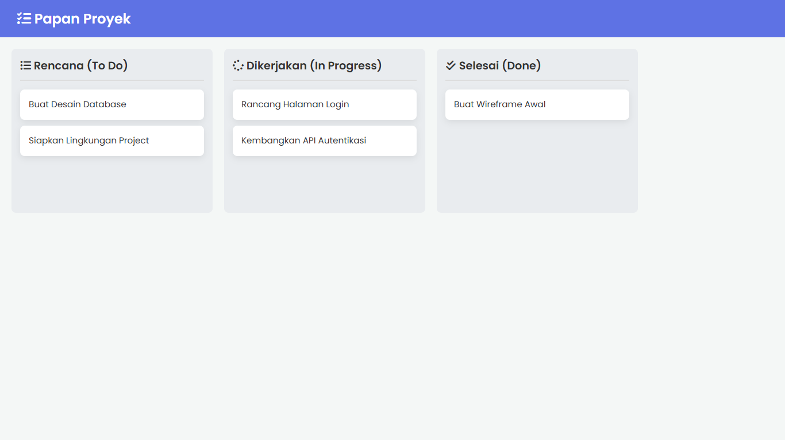

Template Papan Kanban (Drag & Drop)
Tentang Template Ini
Ini adalah template komponen "inovatif" yang berfokus pada **interaktivitas pengguna tingkat tinggi**. Template ini adalah Papan Kanban (seperti Trello) yang fungsional penuh, memungkinkan pengguna untuk menyeret dan melepas (drag-and-drop) kartu tugas antar kolom.
Template ini dibuat murni menggunakan **HTML5 Drag and Drop API** dan **Vanilla JavaScript**, tanpa memerlukan library eksternal. Ini adalah fitur yang sangat dicari dalam Sistem Informasi modern, CRM, atau alat manajemen proyek apa pun.
Fitur Utama:
- Layout Kolom Fleksibel (To Do, In Progress, Done)
- Fungsionalitas **Drag-and-Drop** Penuh
- Dibuat murni dengan **Vanilla JavaScript** (tanpa library)
- Feedback Visual: Kartu yang di-drag menjadi transparan
- Feedback Visual: Kolom target di-highlight saat kartu di atasnya
- Struktur HTML5 Semantik (atribut `draggable="true"`)
- Desain Papan yang Bersih dan Responsif (Scroll horizontal)
Teknologi yang Digunakan:
- HTML5 (Drag and Drop API)
- CSS3 (Flexbox)
- Vanilla JavaScript (DOM Manipulation & Event Listeners)